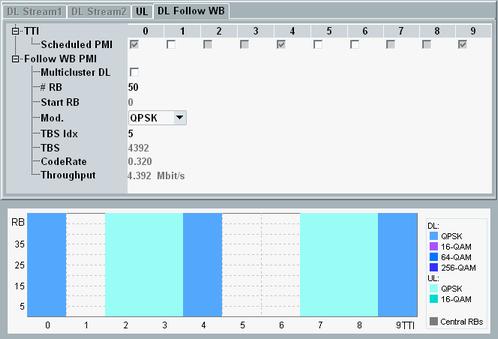

There are two variants of this tab. The PMI variant is active for the scheduling types "Follow WB PMI" and "Follow WB PMI-RI".
Most settings are not configurable per TTI. They apply to all downlink subframes of the carrier. For carrier aggregation scenarios, you can configure the downlink settings per component carrier.

According to 3GPP TS 36.521, some subframes must be inactive (not scheduled), depending on the duplex mode and the scheduling type, see "CQI Channels". The default behavior complies with the 3GPP definition.
The checked boxes indicate which subframes are scheduled. The configurable checkboxes allow you to activate additional DL subframes and special subframes.
Remote command:Only displayed for LAA. Defines the number of subframes per burst.
Remote command:Only displayed for LAA. Defines the periodicity n for subsequent bursts (a burst starts every nth subframe). The minimum value equals the burst length.
Example: Burst length = 3, Periodicity = 4 results in the sequence: (3 SF burst) (1 SF muting) (3 SF burst) and so on.
Remote command:You can enable DL multi-cluster allocation only for resource allocation type 0 (resource block groups). Option R&S CMW-KS510/-KS512 is required (without CA/with CA).
To use DL multi-cluster allocation, enable the checkbox. The button "RB Clusters" is displayed. Press the button to open the following configuration window.

In this dialog box, you can enable or disable each individual RBG via the checkboxes.
Remote command:Plus corresponding PCC commands.
Select the number of allocated resource blocks and the number of the first allocated resource block (without DL multi-cluster allocation).
Remote command:Select or display the modulation type and the transport block size index.
Remote command:Displays the transport block size in bits.
See "Code Rate".
See "Throughput".